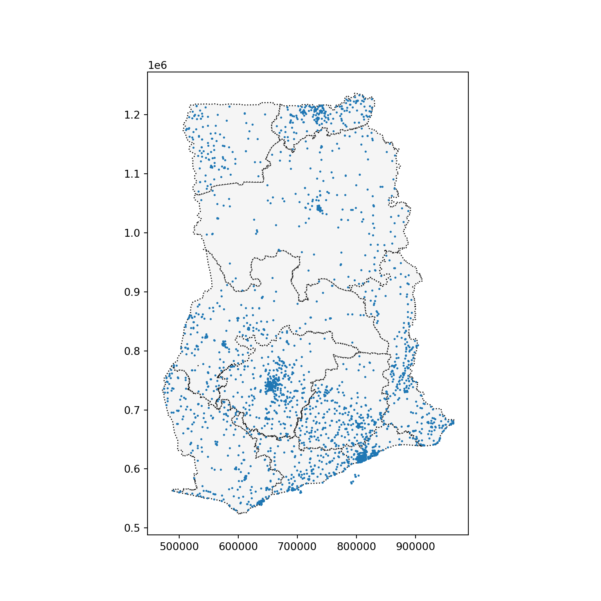
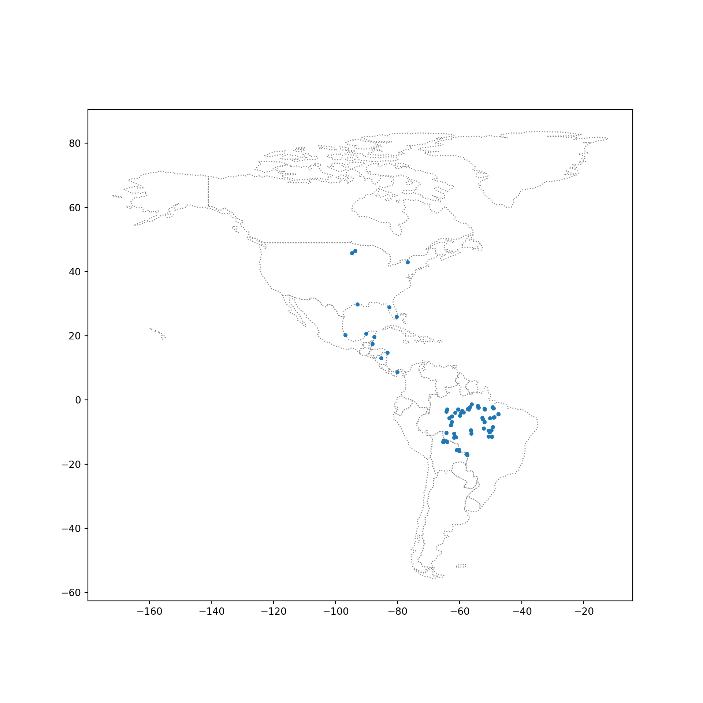
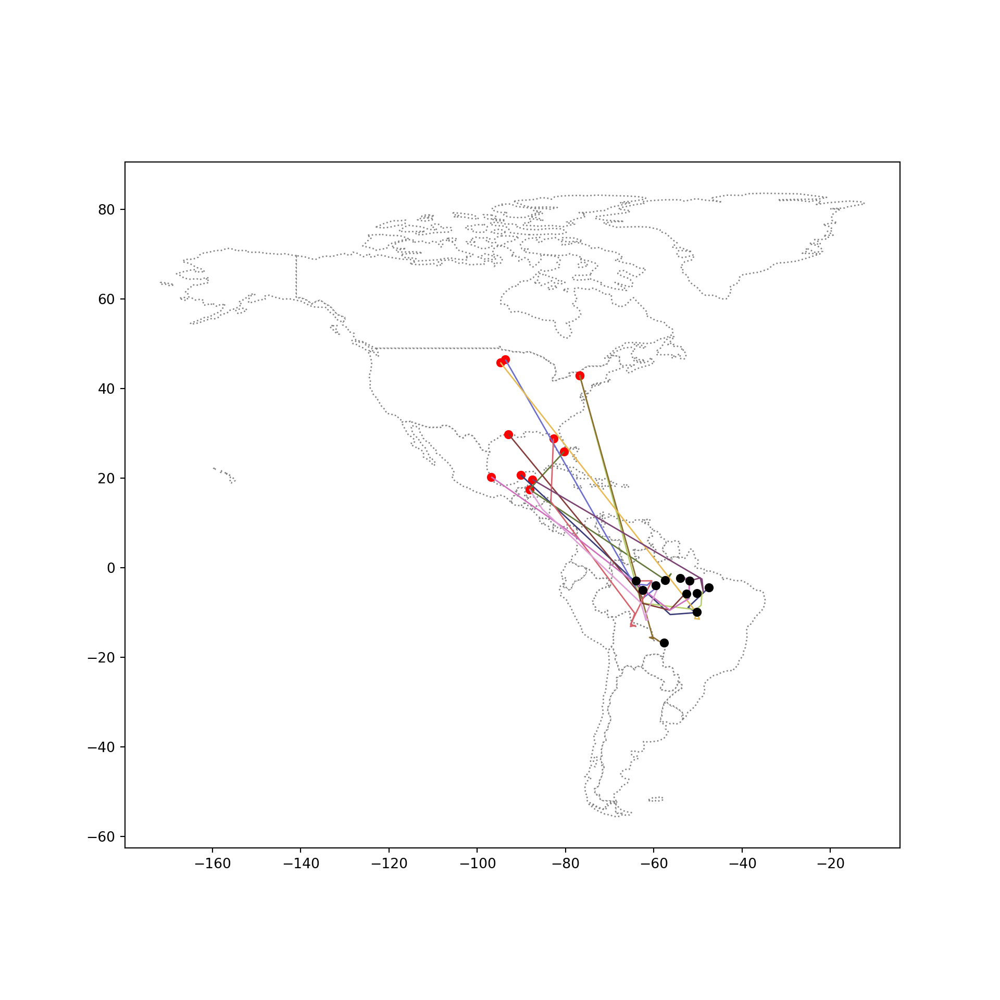
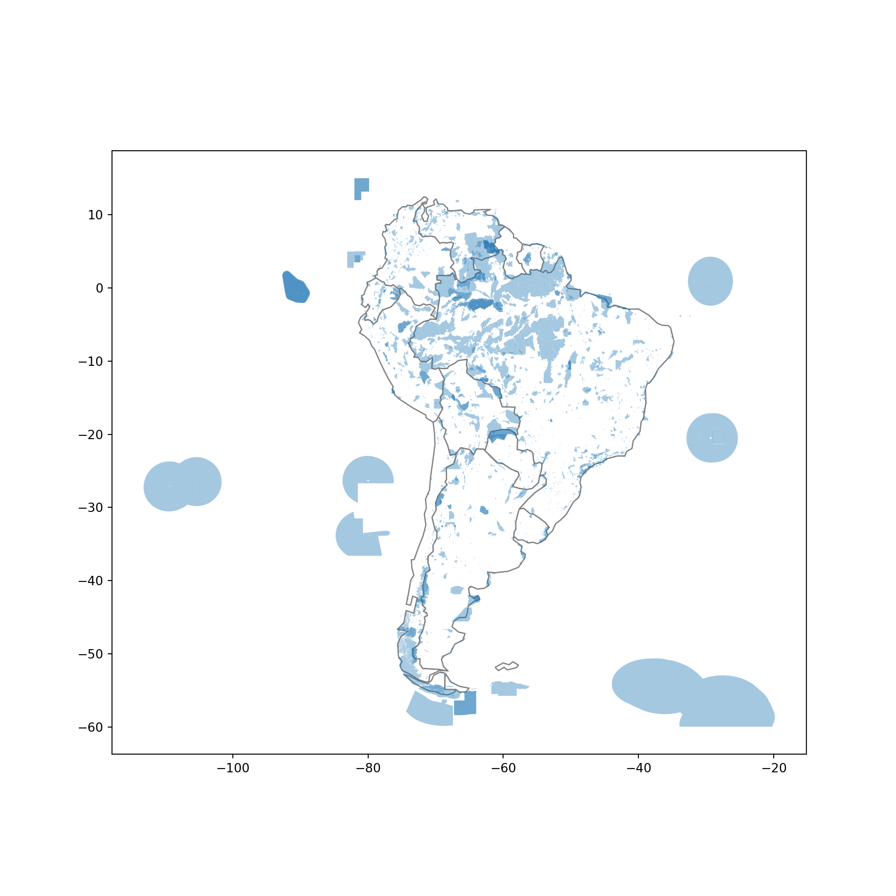
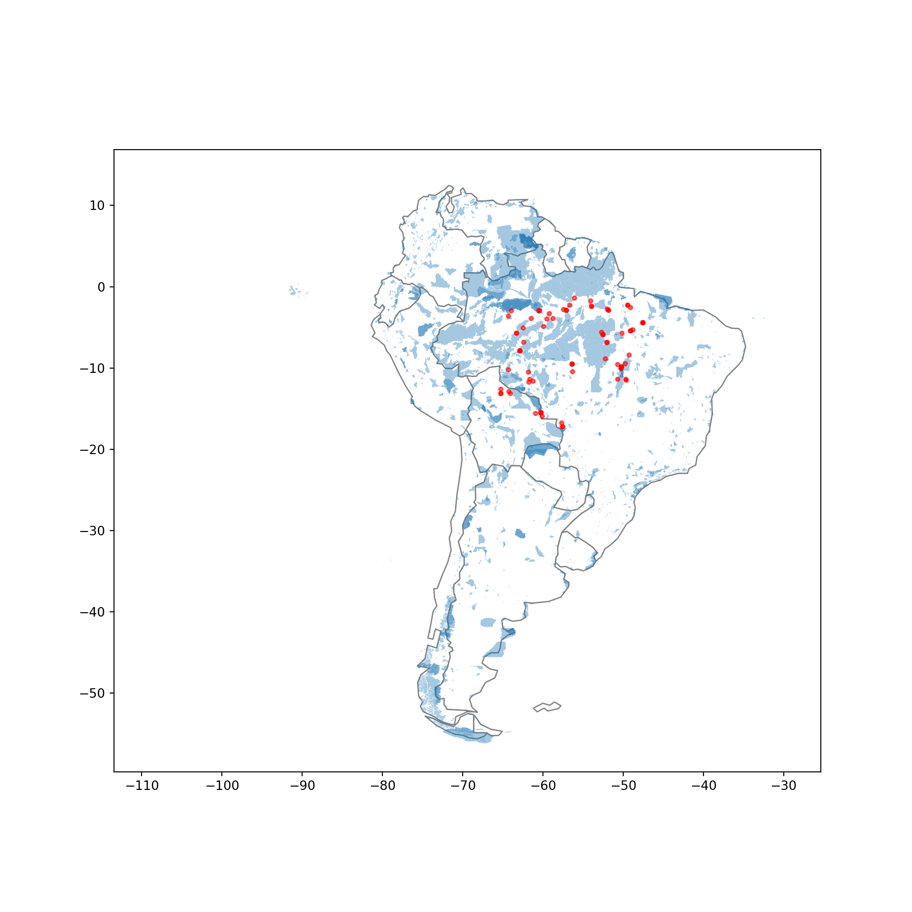

import geopandas as gpd
import pandas as pdCoordinate Reference Systems
Python
Kaggle tutorial
Kaggle Geospatial Analysis (2/5)
Introduction
이 강좌에서 만드는 지도는 지구 표면을 2차원으로 묘사합니다. 하지만 아시다시피 세계는 실제로 3차원의 지구입니다. 따라서 지도 투영이라는 방법을 사용하여 평평한 표면으로 렌더링해야 합니다.
투영된 점이 지구상의 실제 위치와 어떻게 일치하는지 보여주기 위해 좌표 참조 시스템(CRS)을 사용합니다.
이 튜토리얼에서는 좌표 참조계에 대해 자세히 알아보고 Geopandas에서 좌표 참조계를 사용하는 방법을 알아봅니다.
Setting the CRS
When we create a GeoDataFrame from a shapefile, the CRS is already imported for us.
regions = gpd.read_file("/home/sungil/dataset/archive/ghana/ghana/Regions/Map_of_Regions_in_Ghana.shp")
print(regions.crs)EPSG:32630좌표 참조 시스템은 유럽 석유 측량 그룹(EPSG) 코드에 의해 참조됩니다.
이 지리데이터 프레임은 일반적으로 “메르카토르” 투영법이라고 더 많이 불리는 EPSG 32630을 사용합니다. 이 투영법은 각도를 보존하고 면적을 약간 왜곡합니다.
그러나 CSV 파일에서 GeoDataFrame을 만들 때는 CRS를 설정해야 합니다. EPSG 4326은 위도 및 경도 좌표에 해당합니다.
# Create a DataFrame with health facilities in Ghana
facilities_df = pd.read_csv("/home/sungil/dataset/archive/ghana/ghana/health_facilities.csv")
# Convert the DataFrame to a GeoDataFrame
facilities = gpd.GeoDataFrame(facilities_df, geometry=gpd.points_from_xy(facilities_df.Longitude, facilities_df.Latitude))
# Set the coordinate reference system (CRS) to EPSG 4326
facilities.crs = {'init': 'epsg:4326'}/home/sungil/.local/lib/python3.8/site-packages/pyproj/crs/crs.py:141: FutureWarning: '+init=<authority>:<code>' syntax is deprecated. '<authority>:<code>' is the preferred initialization method. When making the change, be mindful of axis order changes: https://pyproj4.github.io/pyproj/stable/gotchas.html#axis-order-changes-in-proj-6
in_crs_string = _prepare_from_proj_string(in_crs_string)# View the first five rows of the GeoDataFrame
facilities.head() Region District ... Longitude geometry
0 Ashanti Offinso North ... -1.96317 POINT (-1.96317 7.40801)
1 Ashanti Bekwai Municipal ... -1.58592 POINT (-1.58592 6.46312)
2 Ashanti Adansi North ... -1.34982 POINT (-1.34982 6.22393)
3 Ashanti Afigya-Kwabre ... -1.61098 POINT (-1.61098 6.84177)
4 Ashanti Kwabre ... -1.61098 POINT (-1.61098 6.84177)
[5 rows x 9 columns]위의 코드 셀에서 CSV 파일에서 GeoDataFrame을 만들려면 Pandas와 GeoPandas를 모두 사용해야 했습니다:
먼저 위도 및 경도 좌표가 포함된 열을 포함하는 데이터 프레임을 만듭니다.
이를 지오데이터프레임으로 변환하기 위해
gpd.GeoDataFrame()을 사용합니다.gpd.points_from_xy()함수는 위도 및 경도 열에서 포인트 객체를 생성합니다.
Re-projecting
재투영은 CRS를 변경하는 프로세스를 말합니다. 이 작업은 GeoPandas에서 to_crs() 메서드를 사용하여 수행됩니다.
ax = regions.plot(figsize=(8,8), color='whitesmoke', linestyle=':', edgecolor='black')
facilities.to_crs(epsg=32630).plot(markersize=1, ax=ax)
to_crs() 메서드는 “geometry” 열만 수정하고 다른 모든 열은 그대로 유지합니다.
GeoPandas에서 EPSG 코드를 사용할 수 없는 경우, CRS의 “proj4 string”이라고 알려진 것을 사용하여 CRS를 변경할 수 있습니다.
예를 들어 위도/경도 좌표로 변환하는 proj4 문자열은 다음과 같습니다:
regions.to_crs("+proj=longlat +ellps=WGS84 +datum=WGS84 +no_defs").head() Region geometry
0 Ashanti POLYGON ((-1.30985 7.62302, -1.30786 7.62198, ...
1 Brong Ahafo POLYGON ((-2.54567 8.76089, -2.54473 8.76071, ...
2 Central POLYGON ((-2.06723 6.29473, -2.06658 6.29420, ...
3 Eastern POLYGON ((-0.21751 7.21009, -0.21747 7.20993, ...
4 Greater Accra POLYGON ((0.23456 6.10986, 0.23484 6.10974, 0....Attributes of geometric objects
첫 번째 튜토리얼에서 배운 것처럼 임의의 GeoDataFrame의 경우 ‘geometry’ 열의 유형은 표시하려는 대상에 따라 달라집니다.
지진의 진원지를 나타내는 Point, 거리의 경우 LineString, 또는 Polygon을 사용하여 국가 경계를 표시할 수 있습니다. 세 가지 유형의 기하학적 개체 모두 데이터 집합을 빠르게 분석하는 데 사용할 수 있는 기본 속성이 있습니다.
예를 들어, x 및 y 속성에서 각각 점의 x 및 y 좌표를 가져올 수 있습니다.
# Get the x-coordinate of each point
facilities.geometry.head().x0 -1.96317
1 -1.58592
2 -1.34982
3 -1.61098
4 -1.61098
dtype: float64또한 길이 속성에서
LineString의 길이를 구할 수 있습니다.또는 면적 속성에서
Polygon의 면적을 구할 수 있습니다.
# Calculate the area (in square meters) of each polygon in the GeoDataFrame
regions.loc[:, "AREA"] = regions.geometry.area / 10**6
print("Area of Ghana: {} square kilometers".format(regions.AREA.sum()))Area of Ghana: 239584.5760055668 square kilometersprint("CRS:", regions.crs)CRS: EPSG:32630regions.head() Region ... AREA
0 Ashanti ... 24379.017777
1 Brong Ahafo ... 40098.168231
2 Central ... 9665.626760
3 Eastern ... 18987.625847
4 Greater Accra ... 3706.511145
[5 rows x 3 columns]위의 코드 셀에서 GeoDataFrame 지역의 CRS가 “메르카토르” 투영법인 EPSG 32630으로 설정되어 있기 때문에 면적 계산이 “아프리카 알버스 등면적 원뿔” 같은 등면적 투영법을 사용한 경우보다 약간 덜 정확합니다.
하지만 이렇게 하면 가나의 면적은 약 239585제곱킬로미터로 계산되어 정답과 크게 다르지 않습니다.
Your turn
Introduction
You are a bird conservation expert and want to understand migration patterns of purple martins. In your research, you discover that these birds typically spend the summer breeding season in the eastern United States, and then migrate to South America for the winter. But since this bird is under threat of endangerment, you’d like to take a closer look at the locations that these birds are more likely to visit.
There are several protected areas in South America, which operate under special regulations to ensure that species that migrate (or live) there have the best opportunity to thrive. You’d like to know if purple martins tend to visit these areas. To answer this question, you’ll use some recently collected data that tracks the year-round location of eleven different birds.
from shapely.geometry import LineStringLoad data
# Load the data and print the first 5 rows
birds_df = pd.read_csv("/home/sungil/dataset/archive/purple_martin.csv", parse_dates=['timestamp'])
print("There are {} different birds in the dataset.".format(birds_df["tag-local-identifier"].nunique()))There are 11 different birds in the dataset.birds_df.head() timestamp location-long location-lat tag-local-identifier
0 2014-08-15 05:56:00 -88.146014 17.513049 30448
1 2014-09-01 05:59:00 -85.243501 13.095782 30448
2 2014-10-30 23:58:00 -62.906089 -7.852436 30448
3 2014-11-15 04:59:00 -61.776826 -11.723898 30448
4 2014-11-30 09:59:00 -61.241538 -11.612237 30448#Create the GeoDataFrame
birds = gpd.GeoDataFrame(birds_df, geometry=gpd.points_from_xy(birds_df["location-long"], birds_df["location-lat"]))
# Set the CRS to {'init': 'epsg:4326'}
birds.crs = {'init' :'epsg:4326'}/home/sungil/.local/lib/python3.8/site-packages/pyproj/crs/crs.py:141: FutureWarning: '+init=<authority>:<code>' syntax is deprecated. '<authority>:<code>' is the preferred initialization method. When making the change, be mindful of axis order changes: https://pyproj4.github.io/pyproj/stable/gotchas.html#axis-order-changes-in-proj-6
in_crs_string = _prepare_from_proj_string(in_crs_string)Plot the data
GeoPandas에서 ‘naturalearth_lowres’ 데이터 집합을 로드하고, 아메리카 대륙의 모든 국가(북미와 남미 모두)의 경계를 포함하는 GeoDataFrame에 americas를 설정합니다.
world = gpd.read_file(gpd.datasets.get_path('naturalearth_lowres'))<string>:1: FutureWarning: The geopandas.dataset module is deprecated and will be removed in GeoPandas 1.0. You can get the original 'naturalearth_lowres' data from https://www.naturalearthdata.com/downloads/110m-cultural-vectors/.americas = world.loc[world['continent'].isin(['North America', 'South America'])]
americas.head() pop_est ... geometry
3 37589262.0 ... MULTIPOLYGON (((-122.84000 49.00000, -122.9742...
4 328239523.0 ... MULTIPOLYGON (((-122.84000 49.00000, -120.0000...
9 44938712.0 ... MULTIPOLYGON (((-68.63401 -52.63637, -68.25000...
10 18952038.0 ... MULTIPOLYGON (((-68.63401 -52.63637, -68.63335...
16 11263077.0 ... POLYGON ((-71.71236 19.71446, -71.62487 19.169...
[5 rows x 6 columns]ax = americas.plot(figsize=(10,10), color='white', linestyle=':', edgecolor='gray')
birds.plot(ax=ax, markersize=10)
Where does each bird start and end its journey? (Part 1)
# GeoDataFrame showing path for each bird
path_df = birds.groupby("tag-local-identifier")['geometry'].apply(list).apply(lambda x: LineString(x)).reset_index()
path_gdf = gpd.GeoDataFrame(path_df, geometry=path_df.geometry)
path_gdf.crs = {'init' :'epsg:4326'}/home/sungil/.local/lib/python3.8/site-packages/pyproj/crs/crs.py:141: FutureWarning: '+init=<authority>:<code>' syntax is deprecated. '<authority>:<code>' is the preferred initialization method. When making the change, be mindful of axis order changes: https://pyproj4.github.io/pyproj/stable/gotchas.html#axis-order-changes-in-proj-6
in_crs_string = _prepare_from_proj_string(in_crs_string)# GeoDataFrame showing starting point for each bird
start_df = birds.groupby("tag-local-identifier")['geometry'].apply(list).apply(lambda x: x[0]).reset_index()
start_gdf = gpd.GeoDataFrame(start_df, geometry=start_df.geometry)
start_gdf.crs = {'init' :'epsg:4326'}/home/sungil/.local/lib/python3.8/site-packages/pyproj/crs/crs.py:141: FutureWarning: '+init=<authority>:<code>' syntax is deprecated. '<authority>:<code>' is the preferred initialization method. When making the change, be mindful of axis order changes: https://pyproj4.github.io/pyproj/stable/gotchas.html#axis-order-changes-in-proj-6
in_crs_string = _prepare_from_proj_string(in_crs_string)# Show first five rows of GeoDataFrame
start_gdf.head() tag-local-identifier geometry
0 30048 POINT (-90.12992 20.73242)
1 30054 POINT (-93.60861 46.50563)
2 30198 POINT (-80.31036 25.92545)
3 30263 POINT (-76.78146 42.99209)
4 30275 POINT (-76.78213 42.99207)end_df = birds.groupby("tag-local-identifier")['geometry'].apply(list).apply(lambda x: x[-1]).reset_index()
end_gdf = gpd.GeoDataFrame(end_df, geometry=end_df.geometry)
end_gdf.crs = {'init': 'epsg:4326'}/home/sungil/.local/lib/python3.8/site-packages/pyproj/crs/crs.py:141: FutureWarning: '+init=<authority>:<code>' syntax is deprecated. '<authority>:<code>' is the preferred initialization method. When making the change, be mindful of axis order changes: https://pyproj4.github.io/pyproj/stable/gotchas.html#axis-order-changes-in-proj-6
in_crs_string = _prepare_from_proj_string(in_crs_string)Where does each bird start and end its journey? (Part 2)
ax = americas.plot(figsize=(10, 10), color='white', linestyle=':', edgecolor='gray')
start_gdf.plot(ax=ax, color='red', markersize=30)
path_gdf.plot(ax=ax, cmap='tab20b', linestyle='-', linewidth=1, zorder=1)
end_gdf.plot(ax=ax, color='black', markersize=30)
Where are the protected areas in South America? (Part 1)
protected_areas = gpd.read_file("/home/sungil/dataset/archive/SAPA_Aug2019-shapefile/SAPA_Aug2019-shapefile/SAPA_Aug2019-shapefile-polygons.shp")Where are the protected areas in South America? (Part 2)
south_america = americas.loc[americas['continent']=='South America']
ax = south_america.plot(figsize=(10,10), color='white', edgecolor='gray')
protected_areas.plot(ax=ax, alpha=0.4)
What percentage of South America is protected?
P_Area = sum(protected_areas['REP_AREA']-protected_areas['REP_M_AREA'])
print("South America has {} square kilometers of protected areas.".format(P_Area))South America has 5396761.9116883585 square kilometers of protected areas.south_america.head() pop_est ... geometry
9 44938712.0 ... MULTIPOLYGON (((-68.63401 -52.63637, -68.25000...
10 18952038.0 ... MULTIPOLYGON (((-68.63401 -52.63637, -68.63335...
20 3398.0 ... POLYGON ((-61.20000 -51.85000, -60.00000 -51.2...
28 3461734.0 ... POLYGON ((-57.62513 -30.21629, -56.97603 -30.1...
29 211049527.0 ... POLYGON ((-53.37366 -33.76838, -53.65054 -33.2...
[5 rows x 6 columns]totalArea = sum(south_america.geometry.to_crs(epsg=3035).area) / 10**6#What percentage of South America is protected?
percentage_protected = P_Area/totalArea
print('Approximately {}% of South America is protected.'.format(round(percentage_protected*100, 2)))Approximately 30.39% of South America is protected.Where are the birds in South America?
ax = south_america.plot(figsize=(10,10), color='white', edgecolor='gray')
protected_areas[protected_areas['MARINE']!='2'].plot(ax=ax, alpha=0.4, zorder=1)
birds[birds.geometry.y < 0].plot(ax=ax, color='red', alpha=0.6, markersize=10, zorder=2)